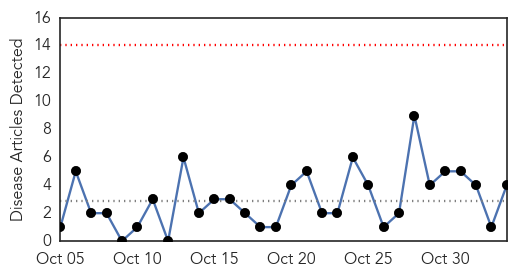

Dengue Fever
30-Day Web Trend
1 alerts, 0 warnings

30-Day Twitter Trend
2 alerts, 0 warnings

Article Locations

Article Confidences

Top Articles:
- 0.990
- Dengue cases are on the rise in Thane
- 0.990
- CHP investigates second local confirmed case of dengue fever
- 0.964
- Hong Kong investigates 2nd locally acquired dengue fever case
- 0.957
- New dengue vaccine tested in Brazil proven effective - Xinhua
- 0.932
- More local cases of dengue fever are likely, authorities warn
- 0.767
- Dengue Claims Boy, Parents Say Doctors Delayed Meds
- 0.519
- Sanofi says first dengue vaccine may be available in H2 2015
Top Tweets:
- 0.511
- Flavivirus news: More local cases of dengue fever are likely, authorities warn - South China Mo... http://t.co/70uTGarNoL pathogenposse
MERS
30-Day Web Trend
0 alerts, 0 warnings

30-Day Twitter Trend
3 alerts, 0 warnings

Article Locations

Article Confidences

Top Articles:
Top Tweets:
-
No tweets found for Nov 03, 2014